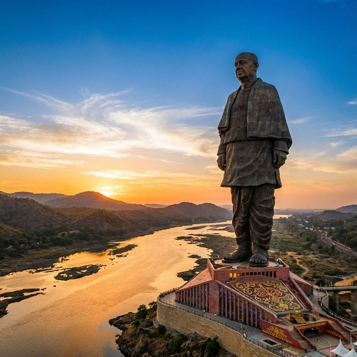

Discover the beautiful tourist places of Gujarat.
Famous monument dedicated to Sardar Vallabhbhai Patel.
Famous pilgrimage destination of Gujarat.
Famous for its beautiful white desert.
Beautiful historical stepwell located in Patan.
Gujarat is famous for its culture, history, food and tourist places.
Statue of Unity, Dwarka, Rann of Kutch and Rani Ki Vav are popular places.
